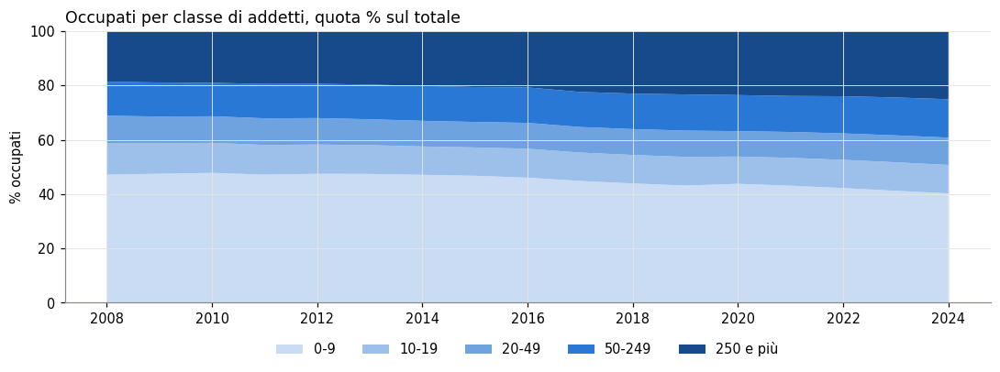
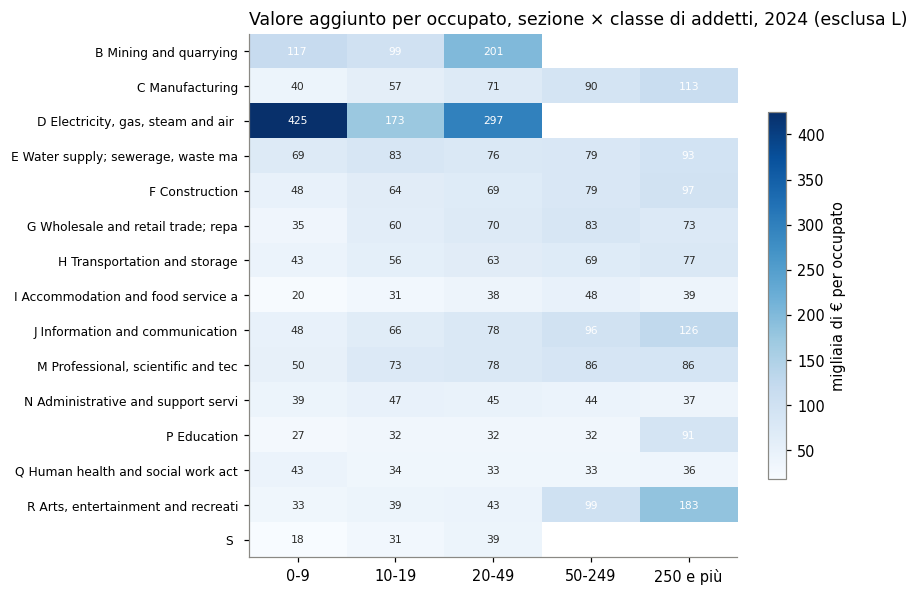
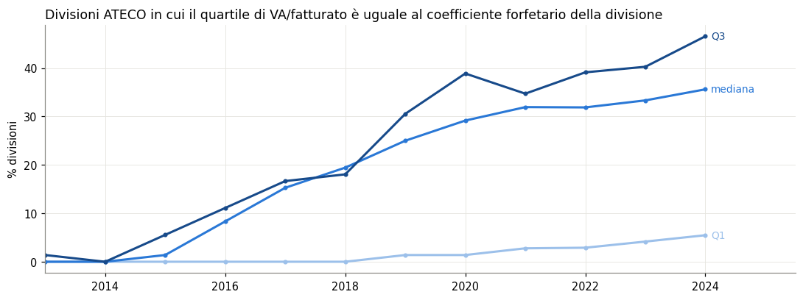
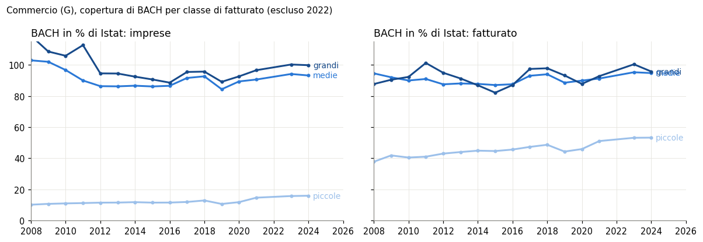

Righe scaricate: 83.580; valori riservati (status c): 4.594.
ISTAT 161_267 — analisi esplorativa dei risultati economici delle imprese
Imprese
Istat
I risultati economici delle imprese italiane dal 2008 al 2024 (Istat): imprese, occupati, conto economico e investimenti per attività e classe di addetti.
Paolo Volterra ![]()
Fonte: Istat, Risultati economici delle imprese - Principali dati (161_267_DF_DCSP_SBSNAZ_1), statistiche strutturali sulle imprese, Italia. Il notebook interroga il servizio SDMX di Istat a ogni esecuzione con una sola chiamata (il servizio limita le richieste per indirizzo IP).
Che cosa contiene. Per l’Italia, dal 2008 al 2024: imprese, occupati, conto economico (fatturato, valore aggiunto, margine operativo lordo, costi del personale) e investimenti, per attività ATECO 2007 (sezioni e divisioni) e classe di addetti (0-9, 10-19, 20-49, 50-249, 250 e più). Dal 2013 anche quartili della distribuzione per impresa (per esempio valore aggiunto su fatturato).
Famiglia 161_267. Lo stesso schema (DCSP_SBSNAZ) alimenta 14 dataflow: i principali dati (_1, usato qui), il dettaglio ATECO a 4 cifre (_2, _3), l’industria e i servizi a 3 cifre per classe di addetti (_4, _5), il commercio per classe di fatturato (_6), gli investimenti ambientali (_7) e singole variabili (_8-_14). Il dataflow regionale è 161_268.
Perché interessa per BACH. L’Italia è uno dei tre paesi BACH con rilevazione esaustiva: il confronto con l’universo Istat misura quanto del sistema produttivo passa per le società di capitali con bilancio depositato.
1. Dimensioni e struttura del dato
| data_type | descrizione | righe | anno_min | anno_max | attività | classi | mancanti |
|---|---|---|---|---|---|---|---|
| 11110 | imprese | 9618 | 2008 | 2024 | 95 | 6 | 479 |
| 12110 | fatturato (migliaia di euro) | 9618 | 2008 | 2024 | 95 | 6 | 569 |
| 12150 | valore aggiunto al costo dei fattori (migliaia di euro) | 9618 | 2008 | 2024 | 95 | 6 | 569 |
| 12170 | margine operativo lordo (migliaia di euro) | 9618 | 2008 | 2024 | 95 | 6 | 569 |
| 13310 | costi del personale (migliaia di euro) | 9618 | 2008 | 2024 | 95 | 6 | 569 |
| 15110 | investimenti lordi in beni materiali (migliaia di euro) | 9618 | 2008 | 2024 | 95 | 6 | 569 |
| 16110 | occupati | 9618 | 2008 | 2024 | 95 | 6 | 479 |
| 16130 | lavoratori dipendenti | 9618 | 2008 | 2024 | 95 | 6 | 479 |
| E12150_PER_ADD_Q1 | valore aggiunto per addetto - 1° quartile (migliaia di euro) | 1106 | 2013 | 2024 | 93 | 1 | 52 |
| E12150_PER_ADD_Q2 | valore aggiunto per addetto - 2° quartile (migliaia di euro) | 1106 | 2013 | 2024 | 93 | 1 | 52 |
| E12150_PER_ADD_Q3 | valore aggiunto per addetto - 3° quartile (migliaia di euro) | 1106 | 2013 | 2024 | 93 | 1 | 52 |
| E12150_SU_FATT_Q1 | valore aggiunto su fatturato - 1° quartile (%) | 1106 | 2013 | 2024 | 93 | 1 | 52 |
| E12150_SU_FATT_Q2 | valore aggiunto su fatturato - 2° quartile (%) | 1106 | 2013 | 2024 | 93 | 1 | 52 |
| E12150_SU_FATT_Q3 | valore aggiunto su fatturato - 3° quartile (%) | 1106 | 2013 | 2024 | 93 | 1 | 52 |
In parole semplici: le variabili di livello (imprese, occupati, conto economico) coprono 2008-2024 per tutte le attività e classi di addetti; i quartili partono dal 2013 e sono pubblicati solo per il totale delle classi.
| livello | 0-9 | 10-19 | 20-49 | 50-249 | 250 e più | Totale |
|---|---|---|---|---|---|---|
| divisione | 3.2 | 4.0 | 7.2 | 9.1 | 12.4 | 3.4 |
| sezione | 0.0 | 0.0 | 2.9 | 3.6 | 6.5 | 0.0 |
| totale | 0.0 | 0.0 | 0.0 | 0.0 | 0.0 | 0.0 |
In parole semplici: percentuale di celle riservate per livello di attività e classe di addetti. Il segreto statistico colpisce soprattutto le divisioni con poche grandi imprese.
2. Le serie lunghe 2008-2024

In parole semplici: dal 2008 al 2024 il numero di imprese è variato del 2,2%, gli occupati del 5,8%, il valore aggiunto (a prezzi correnti) del 54,8%. Nel 2022 il fatturato totale sale di 758 miliardi, di cui 258 nell’energia (D): il salto riflette i prezzi dell’energia.
3. Classi di addetti
| classe di addetti | imprese % | occupati % | valore aggiunto % | investimenti % | VA per occupato (migl. €) | MOL su VA % |
|---|---|---|---|---|---|---|
| 0-9 | 94.7 | 40.3 | 26.9 | 25.6 | 40.2 | 71.4 |
| 10-19 | 3.2 | 10.5 | 9.4 | 7.3 | 53.7 | 41.3 |
| 20-49 | 1.4 | 10.1 | 10.7 | 6.9 | 63.9 | 39.5 |
| 50-249 | 0.6 | 14.1 | 18.1 | 14.9 | 77.1 | 40.6 |
| 250 e più | 0.1 | 25.0 | 34.9 | 45.4 | 83.7 | 41.6 |
In parole semplici: 2024. Le microimprese (0-9 addetti) sono il 94,7% delle imprese ma producono il 26,9% del valore aggiunto; ogni occupato di una grande impresa produce 2,1 volte il valore aggiunto di un occupato di una microimpresa.

In parole semplici: come si distribuiscono gli occupati fra imprese piccole e grandi. La quota delle microimprese passa dal 47,2% (2008) al 40,3% (2024).
4. Settori per classe di addetti

In parole semplici: in 10 sezioni su 12 con entrambi i valori pubblicati un occupato delle imprese con 250 addetti e più produce più valore aggiunto di uno delle microimprese; le celle vuote sono valori riservati.
5. Quartili: la distribuzione per impresa e il regime forfetario
Dal 2013 Istat pubblica i quartili di alcune grandezze per impresa. Il rapporto aggregato (somma del valore aggiunto su somma del fatturato) pesa le imprese grandi; la mediana pesa ogni impresa uguale: la stessa distinzione di BACH fra media ponderata (wm) e quartili (q1, q2, q3).
Anomalia. Negli anni recenti mediana e terzo quartile del valore aggiunto su fatturato assumono in molti settori esattamente i valori 40, 67, 78 o 86%. Sono i coefficienti di redditività del regime forfetario delle persone fisiche (legge 23 dicembre 2014, n. 190, art. 1, commi 54 e 64 e allegato 4): 40% commercio, alloggio e ristorazione, industrie alimentari; 86% costruzioni e immobiliare; 78% attività professionali, scientifiche, tecniche, sanitarie e di istruzione; 67% altre attività. La lettura proposta, da verificare nella nota metodologica Istat: per le imprese in regime forfetario il valore aggiunto è stimato dai ricavi con il coefficiente di legge, e quando queste imprese sono più della metà (o tre quarti) del settore il quartile coincide con il coefficiente.

In parole semplici: nel 2013 la mediana coincide con il coefficiente forfetario nel 0,0% delle divisioni, nel 2024 nel 35,6%. Il regime, in vigore dal 2015, è riservato alle persone fisiche (imprese individuali e professionisti) con ricavi fino a una soglia, oggi 85.000 €. Il fenomeno non è casuale: il valore uguale è sempre quello del gruppo di attività a cui la divisione appartiene per legge. Le società di BACH ne sono escluse per costruzione.
| ATECO | sezione | Q1 | mediana | Q3 | rapporto aggregato | quartile = coefficiente |
|---|---|---|---|---|---|---|
| B | Mining and quarrying | 29.1 | 42.4 | 59.2 | 24.8 | |
| C | Manufacturing | 28.8 | 44.0 | 67.0 | 25.7 | Q3 |
| D | Electricity, gas, steam and air conditio | 32.2 | 67.0 | 91.7 | 15.1 | mediana |
| E | Water supply; sewerage, waste management | 26.0 | 43.2 | 59.8 | 37.5 | |
| F | Construction | 36.5 | 55.8 | 86.0 | 34.1 | Q3 |
| G | Wholesale and retail trade; repair of mo | 14.2 | 31.1 | 54.0 | 14.5 | Q3 |
| H | Transportation and storage | 33.1 | 51.9 | 67.0 | 38.4 | Q3 |
| I | Accommodation and food service activitie | 24.7 | 37.7 | 45.2 | 40.4 | |
| J | Information and communication | 44.8 | 67.0 | 67.1 | 45.9 | mediana |
| L | Real estate activities | 41.0 | 68.9 | 86.0 | 52.3 | Q3 |
| M | Professional, scientific and technical a | 77.7 | 78.0 | 78.0 | 51.1 | mediana, Q3 |
| N | Administrative and support service activ | 49.2 | 67.0 | 67.0 | 48.5 | mediana, Q3 |
| P | Education | 65.4 | 78.0 | 78.0 | 51.9 | mediana, Q3 |
| Q | Human health and social work activities | 76.9 | 78.0 | 80.5 | 55.2 | mediana |
| R | Arts, entertainment and recreation | 45.7 | 67.0 | 67.0 | 48.0 | mediana, Q3 |
| S | S | 55.6 | 67.0 | 67.0 | 51.8 | mediana, Q3 |
In parole semplici: 2024, valore aggiunto in % del fatturato. In B, C, D, F, M, N, P, Q, S il rapporto aggregato è persino sotto il primo quartile: le imprese grandi, che pesano nel rapporto aggregato, hanno un valore aggiunto per euro di fatturato molto più basso dell’impresa tipica. Dove l’ultima colonna è piena i quartili riflettono il coefficiente di legge e non vanno letti come distribuzione economica; il confronto con i quartili BACH (società di capitali, bilanci veri) ha senso solo per le sezioni senza segnalazione.
6. Coerenza interna e raccordo con Eurostat
| variabile | totale | somma sezioni % | somma classi % | somma sezioni × classi % |
|---|---|---|---|---|
| imprese | 4,532,053.00 | 100.00 | 100.00 | 100.00 |
| occupati | 18,308,268.00 | 100.00 | 100.00 | 100.00 |
| valore aggiunto al costo dei fattori (migliaia di euro) | 1,100,373,077.00 | 100.00 | 100.00 | 96.44 |
In parole semplici: 2024. Somme delle sezioni e delle classi in % del totale pubblicato: 100 = coerenza piena; sotto 100 = parte del dato è riservata nelle celle di dettaglio. Il totale 0010 è la somma delle sezioni B-S senza finanza (K) e pubblica amministrazione (O).
| variabile | anno | Eurostat B-S_X_O_S94 | Istat 0010 | differenza | Eurostat K | differenza − K |
|---|---|---|---|---|---|---|
| ENT_NR | 2021 | 4,466,356.0 | 4,359,407.0 | 106,949.0 | 106,949.0 | 0.0 |
| ENT_NR | 2022 | 4,587,208.0 | 4,472,966.0 | 114,242.0 | 114,242.0 | 0.0 |
| ENT_NR | 2023 | 4,625,476.0 | 4,508,791.0 | 116,685.0 | 116,685.0 | 0.0 |
| ENT_NR | 2024 | 4,652,416.0 | 4,532,053.0 | 120,363.0 | 120,363.0 | 0.0 |
| EMP_NR | 2021 | 17,607,909.0 | 17,073,936.0 | 533,973.0 | 533,973.0 | 0.0 |
| EMP_NR | 2022 | 18,202,887.0 | 17,674,243.0 | 528,644.0 | 528,644.0 | 0.0 |
| EMP_NR | 2023 | 18,638,291.0 | 18,106,040.0 | 532,251.0 | 532,251.0 | 0.0 |
| EMP_NR | 2024 | 18,833,334.0 | 18,308,268.0 | 525,066.0 | 525,066.0 | 0.0 |
| AV_MEUR | 2021 | 987,308.8 | 898,334.3 | 88,974.5 | nan | nan |
| AV_MEUR | 2022 | 1,091,754.5 | 1,000,153.8 | 91,600.8 | nan | nan |
| AV_MEUR | 2023 | 1,178,245.4 | 1,073,564.8 | 104,680.6 | nan | nan |
| AV_MEUR | 2024 | 1,212,883.2 | 1,100,373.1 | 112,510.1 | nan | nan |
In parole semplici: l’aggregato Eurostat per l’Italia supera il totale Istat esattamente del valore della finanza (K) dove Eurostat lo pubblica (ultima colonna a zero): le due fonti sono la stessa rilevazione con perimetri diversi. Il valore aggiunto della finanza è riservato in Eurostat; la differenza ne dà la misura implicita. Valore aggiunto in milioni di €.
7. Ponte con BACH: copertura dell’Italia per settore
BACH (società non finanziarie, campione variabile, tutte le dimensioni) contro Istat (tutte le imprese), per sezione, nell’ultimo anno comune. BACH employees si confronta con i dipendenti Istat; gli importi sono in migliaia di € in entrambe le fonti.
| sezione | imprese BACH | imprese Istat | imprese % | dipendenti % | fatturato % | valore aggiunto % |
|---|---|---|---|---|---|---|
| B | 1,129.0 | 1,713.0 | 65.9 | 144.3 | 380.8 | 222.3 |
| C | 117,668.0 | 347,845.0 | 33.8 | 86.1 | 91.4 | 85.0 |
| D | 7,706.0 | 9,907.0 | 77.8 | 111.6 | 76.2 | 109.4 |
| E | 5,172.0 | 8,579.0 | 60.3 | 95.3 | 92.9 | 88.8 |
| F | 104,811.0 | 532,922.0 | 19.7 | 83.2 | 71.0 | 60.5 |
| G | 164,553.0 | 969,519.0 | 17.0 | 92.6 | 82.5 | 63.8 |
| H | 28,361.0 | 117,385.0 | 24.2 | 85.7 | 91.1 | 88.7 |
| I | 57,695.0 | 332,128.0 | 17.4 | 54.3 | 54.0 | 54.9 |
| J | 42,154.0 | 120,531.0 | 35.0 | 98.9 | 92.1 | 85.0 |
| L | 14,533.0 | 226,456.0 | 6.4 | 50.1 | 16.0 | 10.2 |
| M | 66,998.0 | 923,356.0 | 7.3 | 80.2 | 49.3 | 34.5 |
| N | 32,972.0 | 189,983.0 | 17.4 | 55.7 | 72.4 | 74.4 |
| P | nan | 54,067.0 | nan | nan | nan | nan |
| Q | nan | 382,003.0 | nan | nan | nan | nan |
| R | 16,373.0 | 90,206.0 | 18.2 | 93.8 | 76.1 | 62.9 |
| S | 10,812.0 | 225,453.0 | 4.8 | 36.9 | 38.4 | 34.1 |
In parole semplici: 2024. Sulle sezioni presenti in entrambe le fonti (esclusa B), BACH contiene il 16,4% delle imprese Istat. Dove dominano le società di capitali (C, D, E, H, J) BACH copre almeno l’80% del valore aggiunto; dove pesano imprese individuali e professionisti (L, M, S) meno della metà. Rapporti sopra 100 (B, D) segnalano differenze di unità o di classificazione fra le fonti. M in BACH è senza sedi centrali (M701) se BACH non pubblica M intero, quindi la sua copertura è sottostimata; P e Q mancano in BACH per l’Italia.
| fonte | settore | anno | nb_firms | employees | turnover | gross_value_added |
|---|---|---|---|---|---|---|
| BACH | B | 2022 | 1,165 | 24,413 | 83,552,180 | 14,605,890 |
| BACH | B06 | 2022 | 12 | 12,147 | 79,883,089 | 13,430,174 |
| BACH | B08 | 2022 | 1,129 | 11,173 | 3,053,763 | 984,478 |
| BACH | B | 2023 | 1,169 | 23,248 | 48,476,344 | 6,105,158 |
| BACH | B06 | 2023 | 14 | 10,737 | 44,840,258 | 4,839,125 |
| BACH | B08 | 2023 | 1,133 | 11,348 | 3,274,694 | 1,110,401 |
| BACH | B | 2024 | 1,129 | 23,469 | 43,851,245 | 6,336,269 |
| BACH | B06 | 2024 | 18 | 10,944 | 39,916,013 | 4,952,840 |
| BACH | B08 | 2024 | 1,089 | 11,361 | 3,394,505 | 1,198,521 |
| Istat | B06 | 2022 | 10 | 1,598 | 6,517,302 | 1,764,141 |
| Istat | B06 | 2023 | 11 | 1,322 | nan | nan |
| Istat | B06 | 2024 | 13 | 2,013 | nan | nan |
| Istat | B08 | 2022 | 1,613 | 12,224 | 3,326,953 | 1,163,067 |
| Istat | B08 | 2023 | 1,523 | 11,965 | 3,502,279 | 1,252,022 |
| Istat | B08 | 2024 | 1,631 | 12,728 | 3,810,689 | 1,444,468 |
| Istat | B | 2022 | 1,659 | 15,169 | 10,520,947 | 3,199,178 |
| Istat | B | 2023 | 1,569 | 14,740 | 8,488,478 | 2,452,952 |
| Istat | B | 2024 | 1,713 | 16,261 | 11,515,659 | 2,850,745 |
In parole semplici: nell’estrattivo (B) BACH supera Istat in fatturato e valore aggiunto, per effetto della divisione B06 (petrolio e gas): poche società con fatturato molto alto in BACH, molto più basso in Istat. L’ipotesi è una differenza di unità statistica o di classificazione settoriale (società in BACH, impresa statistica in Istat), non un errore di una delle due fonti; per questo B è esclusa dal totale di copertura.
8. Commercio per classe di fatturato: il confronto con le classi BACH
Il dataflow 161_267_DF_DCSP_SBSNAZ_6 pubblica il commercio (sezione G e divisioni 45, 46, 47) per classe di fatturato, con confini che coincidono con quelli di BACH: piccole sotto 10 milioni (classi Istat 01-04), medie 10-50 milioni (05-06), grandi da 50 milioni (07-08). È l’unico confronto Istat-BACH a parità di classe dimensionale. Gli occupati Istat comprendono gli indipendenti; BACH conta i dipendenti.
| anno | imprese | fatturato | valore aggiunto | occupati |
|---|---|---|---|---|
| 2019 | 100.0 | 100.0 | 100.0 | 100.0 |
| 2020 | 100.0 | 100.0 | 100.0 | 100.0 |
| 2021 | 100.0 | 100.0 | 100.0 | 100.0 |
| 2022 | 103.0 | 159.7 | 153.4 | 132.9 |
| 2023 | 100.0 | 100.0 | 100.0 | 100.0 |
| 2024 | 100.0 | 100.0 | 100.0 | 100.0 |
In parole semplici: somma delle classi di fatturato in % del totale pubblicato, sezione G. Deve fare 100: fa eccezione il 2022, in cui le classi sommano molto più del totale (che coincide invece con quello del dataflow principale). Le classi di quell’anno non si usano nel confronto.
| ateco | classe | imprese Istat | imprese BACH | imprese % | fatturato % | valore aggiunto % | dipendenti BACH / occupati Istat % |
|---|---|---|---|---|---|---|---|
| 45 | tutte | 116913 | 22747 | 19.5 | 86.7 | 64.0 | 44.5 |
| 45 | piccole (<10 mln) | 115400 | 21178 | 18.4 | 55.1 | 43.7 | 30.6 |
| 45 | medie (10-50 mln) | 1093 | 1115 | 102.0 | 104.7 | 87.3 | 96.6 |
| 45 | grandi (≥50 mln) | 420 | 454 | 108.1 | 97.7 | 84.2 | 90.8 |
| 46 | tutte | 360471 | 82265 | 22.8 | 93.3 | 71.6 | 60.7 |
| 46 | piccole (<10 mln) | 352149 | 74248 | 21.1 | 66.3 | 49.7 | 41.1 |
| 46 | medie (10-50 mln) | 6675 | 6375 | 95.5 | 96.4 | 91.2 | 103.2 |
| 46 | grandi (≥50 mln) | 1647 | 1642 | 99.7 | 105.0 | 84.0 | 90.0 |
| 47 | tutte | 532049 | 64208 | 12.1 | 68.2 | 60.5 | 46.3 |
| 47 | piccole (<10 mln) | 529322 | 61811 | 11.7 | 39.2 | 34.9 | 24.6 |
| 47 | medie (10-50 mln) | 2229 | 1922 | 86.2 | 86.5 | 82.9 | 80.0 |
| 47 | grandi (≥50 mln) | 498 | 475 | 95.4 | 92.1 | 83.8 | 88.2 |
| G | tutte | 1009433 | 169220 | 16.8 | 84.4 | 66.7 | 51.0 |
| G | piccole (<10 mln) | 996871 | 157237 | 15.8 | 53.2 | 43.1 | 30.9 |
| G | medie (10-50 mln) | 9997 | 9412 | 94.1 | 95.3 | 88.9 | 93.5 |
| G | grandi (≥50 mln) | 2565 | 2571 | 100.2 | 100.4 | 83.9 | 88.9 |
In parole semplici: 2023. Fra le imprese commerciali grandi Istat ne conta 2.565, BACH 2.571: con classi identiche le due fonti vedono quasi le stesse imprese. Il divario è tutto nelle piccole, dove mancano le imprese individuali. Rapporti appena sopra 100 nelle medie e grandi segnalano imprese classificate in divisioni o classi diverse dalle due fonti.

In parole semplici: nel tempo BACH ritrova stabilmente quasi tutte le imprese commerciali medie e grandi; fra le piccole la copertura in numero è bassa (15,8% nel 2023) ma quella in fatturato arriva a circa la metà.
| anno | imprese BACH | dipendenti BACH | occupati Istat | dipendenti per impresa BACH |
|---|---|---|---|---|
| 2017 | 67368 | 306372 | 801084 | 4.55 |
| 2018 | 70458 | 318372 | 795282 | 4.52 |
| 2019 | 58422 | 280725 | 790015 | 4.81 |
| 2020 | 62682 | 290686 | 787380 | 4.64 |
| 2021 | 72971 | 317607 | 775017 | 4.35 |
| 2023 | 74248 | 309565 | 754105 | 4.17 |
| 2024 | 72059 | 752766 | 699407 | 10.45 |
In parole semplici: commercio all’ingrosso (46), piccole imprese. In BACH i dipendenti per impresa passano da 4,2 a 10,4 nell’ultimo anno, mentre imprese e fatturato calano; nel 2024 i dipendenti BACH (752.766) superano perfino gli occupati Istat (699.407), che includono gli indipendenti. È un’anomalia del dato BACH dell’ultimo rilascio, da segnalare al produttore.
Istat, Risultati economici delle imprese - Principali dati (161_267_DF_DCSP_SBSNAZ_1), statistiche strutturali sulle imprese; Istat, Risultati economici delle imprese - Commercio (Ateco 2 cifre) e classe di fatturato (161_267_DF_DCSP_SBSNAZ_6). Scaricati da esploradati.istat.it. — Eurostat, Enterprises by detailed NACE Rev. 2 activity and special aggregates (sbs_ovw_act), Structural business statistics. — BACH database: ECCBSO, Oesterreichische Nationalbank, National Bank of Belgium, Deutsche Bundesbank, Banco de España, Banque de France, Hrvatska Narodna Banka, Magyar Nemzeti Bank, Centrale dei Bilanci - Cerved srl / Banca d’Italia, Statec Luxembourg, Narodowy Bank Polski (calculations of Narodowy Bank Polski on the basis of the data from the Statistics Poland), Banco de Portugal, National Bank of Slovakia (calculations based on data from the Ministry of Finance). Rilascio BACH 20260914.
Nota metodologica
Questo documento nasce dall’interazione di tre componenti. L’autore definisce le domande, esercita il giudizio critico e assume la responsabilità scientifica ed editoriale del risultato. Strumenti di intelligenza artificiale generativa sono impiegati a supporto della ricerca bibliografica, della lettura, della sintesi, della riorganizzazione argomentativa e della revisione del testo. Un’infrastruttura open source sviluppata dall’autore automatizza il reperimento, l’armonizzazione e il controllo dei dati dalle fonti statistiche ufficiali, e mantiene l’elaborazione documentata e riproducibile.
Le fonti sono pubblicamente accessibili e citate con la loro denominazione ufficiale; l’analisi è pertanto integralmente auditabile e replicabile da terzi a partire da esse. Le tabelle e i grafici sono elaborazioni dell’autore: calcoli, aggregazioni, trasformazioni e scelte di rappresentazione sono attribuibili all’autore e non agli enti produttori dei dati.
La responsabilità per le fonti utilizzate, le analisi condotte, le elaborazioni effettuate, le interpretazioni proposte e le conclusioni formulate resta interamente in capo all’autore. L’intelligenza artificiale è stata impiegata come ambiente di supporto cognitivo ed editoriale, non come fonte primaria, autore autonomo o sostituto del giudizio critico.